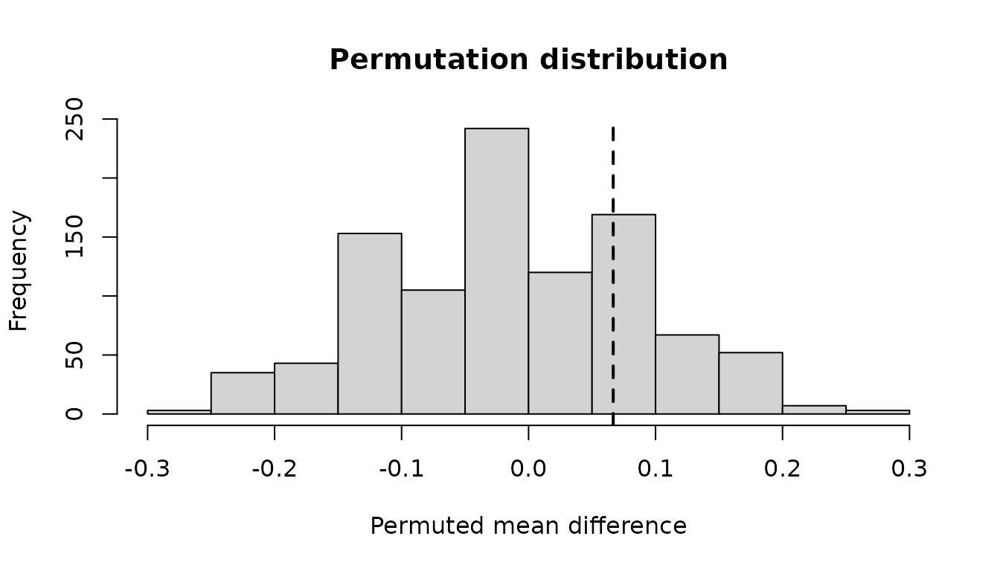
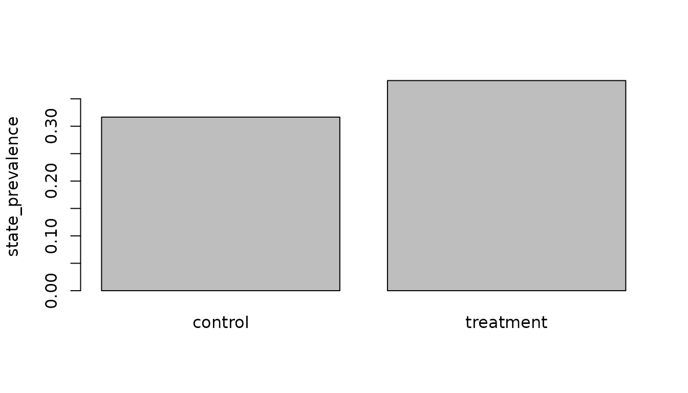

Design-Aware Sequence Group Inference
Source:vignettes/sequence-inference-and-randomization.Rmd
sequence-inference-and-randomization.RmdWhy declare the design?
Sequence rows are rarely independent. The comparison API requires the group column and independent unit, and can additionally record pairs or assignment clusters. It aggregates the selected metric before permutation or bootstrap resampling.
Synthetic randomized groups
paths <- replicate(20, sample(c("A", "B", "C"), 6L, replace = TRUE), simplify = FALSE)
data <- do.call(rbind, lapply(seq_along(paths), function(i) {
data.frame(
participant_id = paste0("p", i),
sequence_id = paste0("s", i),
sequence_order = seq_along(paths[[i]]),
state = paths[[i]],
group = if (i <= 10L) "control" else "treatment",
stringsAsFactors = FALSE
)
}))Declare and test
design <- declare_sequence_comparison_design(
group_col = "group",
unit_col = "participant_id",
design = "randomized"
)
result <- test_sequence_group_difference(
data,
design,
metric = "state_prevalence",
target_state = "A",
n_permutations = 999L,
seed = 10L
)
result$estimate
#> group_1 group_2 mean_group_1 mean_group_2 difference_group_2_minus_group_1
#> 1 control treatment 0.3166667 0.3833333 0.06666667
#> p_value alternative n_permutations
#> 1 0.458 two.sided 999Supported metrics are deliberately limited to transparent quantities: sequence length, transition count, state prevalence, and declared subsequence presence.
Bootstrap interval
result <- bootstrap_sequence_group_difference(
result,
n_boot = 999L,
level = 0.95,
seed = 11L
)
summarise_sequence_group_inference(result)
#> $estimate
#> group_1 group_2 mean_group_1 mean_group_2 difference_group_2_minus_group_1
#> 1 control treatment 0.3166667 0.3833333 0.06666667
#> p_value alternative n_permutations
#> 1 0.458 two.sided 999
#>
#> $bootstrap_interval
#> level lower upper n_boot seed
#> 1 0.95 -0.1166667 0.25 999 11
#>
#> $design
#> design group_col unit_col pair_col cluster_col
#> 1 randomized group participant_id <NA> <NA>
#>
#> $metric
#> [1] "state_prevalence"
#>
#> $interpretation
#> [1] "Randomization-based contrast, conditional on valid assignment and study implementation."
plot_sequence_group_inference(result, type = "permutation")
plot_sequence_group_inference(result, type = "group_means")
Causal language
For design = "randomized", causal interpretation still
depends on valid assignment, implementation, attrition handling, and an
estimand consistent with the design. For
design = "observational", the output explicitly describes
an associational exchangeability-based contrast and does not license
causal claims.